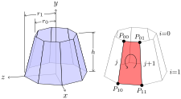

Definition 1.
Suppose that \(\frac{d}{dx}F(x)=f(x)\text{.}\) Then the indefinite integral of \(f(x)\) is \(F(x)\) and is written as
\begin{equation*}
\int\,f(x)\,dx=F(x)\text{.}
\end{equation*}
| Robert A. Beezer |
|---|
| University of Puget Sound |
An <abstract> can appear on an early slide, optionally. This is a standard component of a PreTeXt <article> (but not of a <book>).
This is a second paragraph of the abstract for this wonderful talk, just so we have something a bit more substantial.
This is a PreTeXt slideshow designed mostly for testing new features. As of 2019-11-16 it is only initiated, and not comprehensive. If you improve a feature, please add examples here.
tcolorbox package (CSS-like)These are enumerated with capital letters.
tcolorbox package (CSS-like)These are inline
And these have pauses.
tcolorbox package (CSS-like)XML syntax is a nested hierarchy (a tree)
<foo>…</foo>
<bar/><baz qux="corge">XML syntax is a nested hierarchy (a tree)
<foo>…</foo>
<bar/><baz qux="corge">Controls most of the activities of the computer, performs the arithmetic and logical operations, and contains a small amount of very fast memory.
Provides storage for the instructions for the CPU and the data they manipulate.
Communicates with the outside world and with mass storage devices (e.g., disks).
A communication pathway with a protocol specifying exactly how the pathway is used. (The punctuation is just for testing.)
Controls most of the activities of the computer, performs the arithmetic and logical operations, and contains a small amount of very fast memory.
Provides storage for the instructions for the CPU and the data they manipulate.
Communicates with the outside world and with mass storage devices (e.g., disks).
A communication pathway with a protocol specifying exactly how the pathway is used. (The punctuation is just for testing.)
<definition>
Suppose that \(\frac{d}{dx}F(x)=f(x)\text{.}\) Then the indefinite integral of \(f(x)\) is \(F(x)\) and is written as
<theorem>
This should also test other “theorem-like”, such as <corollary>.
If \(f(x)\) is continuous, and the derivative of \(F(x)\) is \(f(x)\text{,}\) then
Left to the reader.
Here is an inline bit of code with surrounding text. print("hello world"). Here is a more text. And some more. And yet more. And a full program... with Prism support.
def f(x):
return x**2
# many intentional blank lines below...
# you may to zoom out, but at some point better to scroll a long listing
print(f(3))
This Sage Cell is testing styling.
We have some mathematics on the page, to look for Javascript interference with MathJax. An identity due to Ramanujan:
And some more mathematics. An identity due to Ramanujan:
Pausing doesn’t always act how you expect from LaTeX. The first and third lines are always visible.
But this one needs you to advance the slide.
(Visible from the outset.)
Subslides are another way to achieve pausing without lists.
This is a subslide. It always comes after a pause.
But this is still visible from the outset.
Images can be included from external sources. As with other PreTeXt formats, you can specify the location of your exteral images in the publication file. The image below also appears in the PreTeXt Sample Article, and originated at www.texample.net.

You will want to ensure your image has an @width if you want it to fit correctly in your slide.
Images can also be generated from source. TikZ works well, and Asymptote. They can be placed in a <sidebyside>, and inside a <figure> (or both).
Common formatting macros for TikZ and Asymptote (which you expect to use repeatedly) can be placed in <docinfo>, using <latex-image-preamble> and <asymptote-preamble>, respectively.
Note that 3D Asymptote images will be rendered in WebGL, and will be interactive within your slide.

Annotated PreFigure diagrams also work well by including them in the usual way.